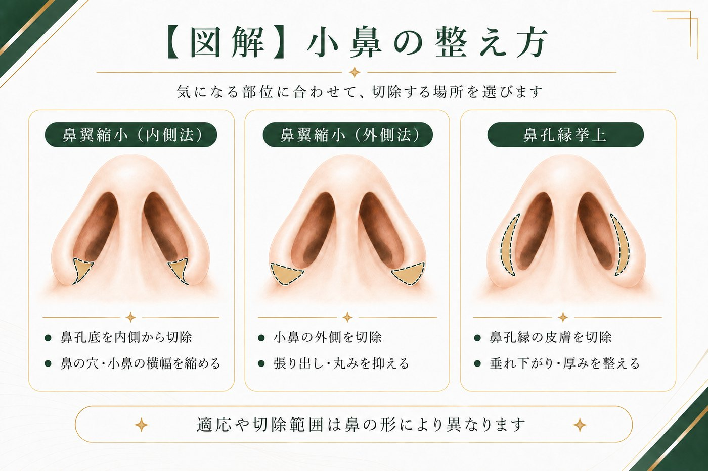

Section 01
小鼻を整える3つの方法
小鼻の悩みは、切る場所が異なる3つの方法を、必要に応じて組み合わせて整えます。まず全体像を図解で確認しましょう。

- 内側法（鼻翼縮小）：鼻の穴の大きさ・小鼻の横幅を小さくする（図の左）
- 外側法（鼻翼縮小）：小鼻の外側の張り出しを抑える（図の中央）
- 鼻孔縁挙上：小鼻の厚みを薄くする（図の右）
この3つを、悩みに応じて、組み合わせて行います（例：内側法＋外側法）。
Section 02
3つの方法をくわしく
3つは「切る場所」と「効果」が違います。図解と合わせてご覧ください。
| 方法 | 切る場所 | 向いている悩み |
|---|---|---|
| 内側法 | 鼻孔底を内側から | 鼻の穴が大きい・小鼻の横幅を縮めたい |
| 外側法 | 小鼻の外側 | 小鼻の張り出し・丸みを抑えたい |
| 鼻孔縁挙上 | 鼻孔縁（穴のフチ）の皮膚 | 小鼻の肉厚感・垂れ下がりを整えたい |
内側法・外側法（＝鼻翼縮小）は「小鼻の大きさ」を、鼻孔縁挙上は「小鼻の厚み」を整えるもので、目的が違います。だから、大きさと厚みの両方が気になる場合は組み合わせて整えます。
今回掲載している症例は、内側法＋外側法で整えたケースです。
Section 03
どう選ぶ？ 組み合わせは？
気になる状態ごとに、向いている方法を整理しました。複数が気になるときは、それぞれを組み合わせて整えます（適応は診察で判断します）。
| 気になる状態 | 向いている方法 |
|---|---|
| 鼻の穴が大きい／小鼻の横幅 | 内側法 |
| 小鼻の外側の張り出し | 外側法 |
| 穴の大きさ＋張り出しの両方 | 内側法＋外側法 |
| 小鼻の肉厚感／垂れ下がり | 鼻孔縁挙上 |
| 鼻が上向きで穴が正面を向く | ＋鼻中隔延長（鼻先の向きから整える） |
鼻の穴が目立つ原因が“鼻の向き”のときは、小鼻を切っても変わらないため鼻中隔延長で鼻先の向きから整えます。鼻全体の組み合わせ方は術式まるわかりガイドもご覧ください。
Section 04
きれいに仕上げる3つのコツ
小鼻の手術は手軽に見えて、いちばん不自然になりやすいところです。当院が大切にしているのは次の3つです。
- ① 切開し過ぎない：切りすぎると不自然になり、元に戻せません。必要な分だけにします
- ② 鼻先とのバランスを見る：小鼻だけ整えても、鼻先が大きいままだと逆に鼻先が目立つことがあります
- ③ 鼻の穴のカーブを自然に残す：穴が真横に潰れないよう、丸みを残して縫合します
Section 05
症例（正面・斜め・横）
鼻翼縮小の内側法＋外側法のみを行った症例です。タブで角度を切り替えられます。
症例｜鼻の穴が大きく見えるのが悩み（鼻の高さは変えず）／鼻翼縮小（内側法＋外側法）のみ

images/case-kobana-front.jpg

images/case-kobana-oblique.jpg

images/case-kobana-side.jpg
- 施術内容
- 鼻翼縮小（内側法＋外側法）のみ ／ 鼻の高さ・鼻先は変えていません
- 料 金
- ¥308,000（税込／内側法＋外側法）
- 主なリスク・副作用
- 腫れ・内出血・傷跡・左右差・後戻り・つっぱり感・仕上がりの個人差 等
- ダウンタイム
- 約1〜2週間（写真は術後1週間）
※ 30代の患者様。「鼻の穴が大きく見える」ことがお悩みで、「鼻の高さは変えなくていい」とご希望のケース（同意のうえ掲載／プライバシー保護のため目元を加工）。効果には個人差があり、リスク・副作用を伴います。自由診療（保険適用外）。
Section 06
費用
3つの方法それぞれの料金です（税込・自由診療）。複数を組み合わせる場合の料金もあわせて記載します。
| 鼻翼縮小（内側法） | ¥220,000 |
|---|---|
| 鼻翼縮小（外側法） | ¥220,000 |
| 鼻翼縮小（内側法＋外側法） | ¥308,000 |
| 鼻孔縁挙上 | ¥242,000 |
料金について詳しく見る（別途費用・モニター）
Section 07
ダウンタイム・リスク
腫れ・内出血は1〜2週間ほどで落ち着くことが多く、抜糸は約1週間後が目安です。傷が落ち着くまでには数か月かかります。
主なリスク・副作用
- 腫れ・内出血・つっぱり感（時間の経過とともに軽快することが多い）
- 傷あと（内側法は穴の中／外側法は小鼻のキワ）。体質により赤み・硬さが長引くことがある
- 左右差、鼻の穴の形の違い、後戻り
- 切りすぎると不自然になる・元に戻せない（当院は軽く抑えることを基本にしています）
- 感染、仕上がりのイメージとの違い、効果の個人差
Section 08
よくある質問
傷あとは目立ちますか？
内側法は鼻の穴の中を切るため外から見えにくく、外側法は小鼻のキワのシワに沿わせて縫合するため時間とともに目立ちにくくなることが多いです。鼻孔縁挙上も穴のフチに沿って切開します。ただし治り方には体質による個人差があります。
たくさん切ったほうが小さくなりますか？
いいえ。切りすぎると小鼻が不自然にすぼまり、一度切った小鼻は元に戻せません。当院は「軽く抑える程度」を基本にしています。控えめなほうが鼻先とのバランスや穴の自然なカーブが保たれ、結果的にきれいです。
鼻先や鼻筋は変えずに小鼻だけ整えられますか？
できます。掲載症例も鼻の高さや鼻先は変えず、鼻翼縮小（内側法＋外側法）のみで対応したケースです。
小鼻の肉厚感や穴のフチの垂れ下がりも気になります。
その場合は、鼻の穴のフチ（鼻孔縁）を薄くする鼻孔縁挙上を組み合わせるとバランスよく仕上がります。鼻翼縮小（内側法・外側法）と鼻孔縁挙上のどれを・どう組み合わせるかは、診察で見極めます。